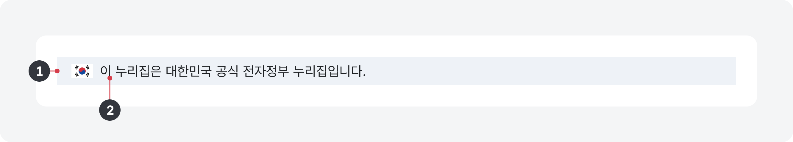
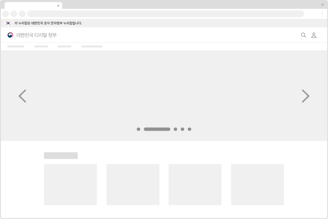
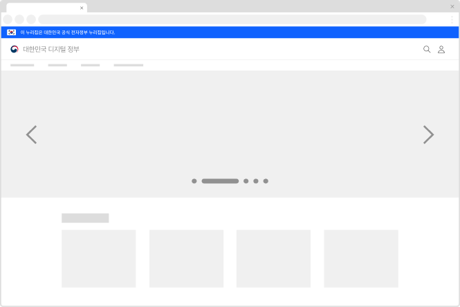
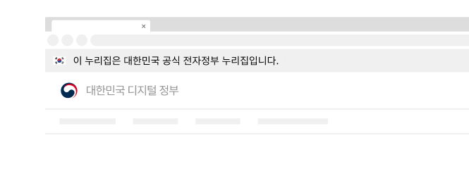
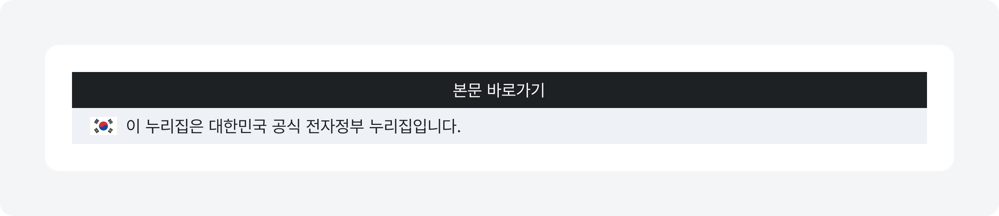

@@include("../inc/guide-lnb.html")
@@include("../inc/page-breadcrumb.html")
@@include("../inc/page-title.html", {
"desc" : '공식 배너는 사용자가 대한민국 정부 조직 및 관련 기관에서 운영 및 관리하는 디지털 정부서비스임을 식별할 수 있도록 제공하는 정보 배너이다.'
})
@@include("../inc/page-tab-list.html", { "list": [ { name: "개요", class: "active" }, { name: "접근성", class: "" }, { name: "코드", class: ""}, ] })
@@include("../inc/page-quick-nav.html")
 @@include("../inc/page-faq.html")
@@include("../inc/page-info-update-log.html")
@@include("../inc/page-banner.html")
@@include("../inc/page-faq.html")
@@include("../inc/page-info-update-log.html")
@@include("../inc/page-banner.html")
구조

- 1. 컨테이너배너 정보가 제공되는 영역
- 2. 텍스트공식 디지털 서비스임을 안내하는 문구
사용성 가이드라인
배너는 모든 화면의 최상단에 제공한다.
공식 정부 배너 영역은 사용자가 해당 디지털 서비스를 신뢰할 수 있는 기준이 되며, 디지털 공공 서비스에 대한 일관성 있는 사용자 경험의 출발점이므로 모든 서비스에서 동일한 위치에 동일한 형태와 스타일로 제공한다.
배너의 위치가 일관성 없거나 특정 화면에만 제공될 경우 사용자에게 혼동을 줄 수 있다.
배너가 지나치게 주의를 끌지 않도록 표현한다.
서비스의 디자인 주제에 적합한 컨테이너 배경색을 사용한다. 화면 상단 영역에서 사용자가 가장 먼저 집중해야 하는 정보는 헤더 내부의 내비게이션과 기능 버튼이다.
모범 사례

피해야 할 사례

배너 텍스트와 스타일을 변형하지 않는다.
모든 디지털 정부서비스에서 공식 배너가 일관성 있게 제공되었을 때 신뢰할 수 있다.
모범 사례

피해야 할 사례
공식 디지털 정부서비스가 아닌 사이트에서는 배너를 사용하지 않아야 한다.
정부의 공식 서비스가 아닌 곳에서 배너를 사용하게 될 경우 사용자에게 혼동을 줄 수 있으므로 배너를 사용하지 않아야 한다.
접근성 가이드라인
건너뛰기 링크는 공식 배너 이전에 제공한다.
공식 배너는 모든 페이지에서 반복되는 영역이므로 스크린 리더 사용자와 키보드 사용자가 이를 건너뛸 수 있도록 건너뛰기 링크를 가장 첫 요소로 제공해야 한다.
- KWCAG 2.2 반복 영역 건너뛰기
- WCAG 2.1 Bypass Blocks (A)

예시
@@include("../inc/page-example.html",{ "example": [ { title: "기본", folder: "..", file: "masthead", class: "" } ]})마크업 가이드
CSS 선택자
| 필수 | |
|---|---|
| 전체영역 | #krds-masthead |
개발 시 접근성 관련 주의사항
- 공식배너보다 건너뛰기 링크를 먼저 제공한다.